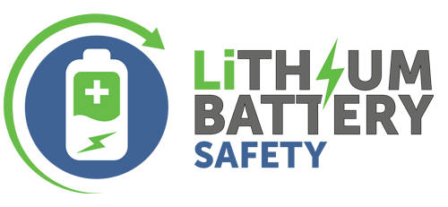
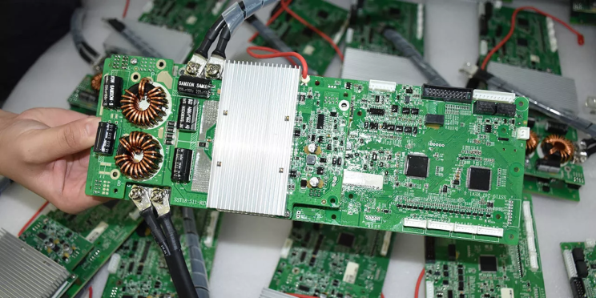
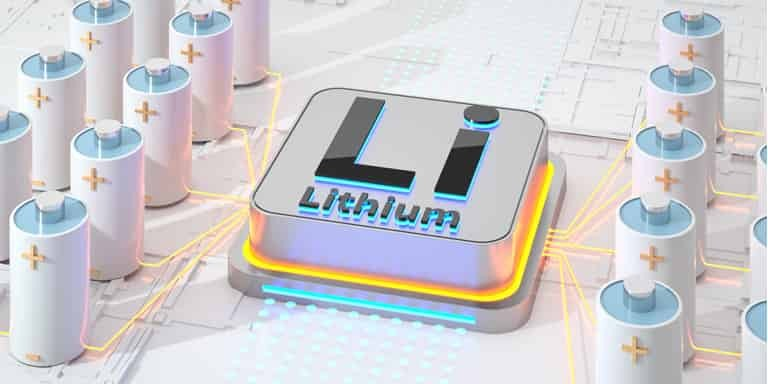

Electric vehicles are becoming a big part of our lives. In big cities in India, your groceries might be delivered by an electric vehicle. In smaller cities, you often see electric rickshaws. These vehicles use a lot of batteries. The global Lithium-ion Battery Market was worth USD 56.8 billion in 2023. It is expected to grow at a rate of 14.2 percent and reach USD 187.1 billion by 2032.
The demand for lithium-ion batteries is increasing due to more hybrid and electric vehicles, strict environmental rules, higher demand for electronics, and better battery technology. Lower prices are also helping more industries use these batteries.
The rising adoption of electric vehicles is not only a reflection of technological advancement but also a response to the pressing need to reduce greenhouse gas emissions and combat climate change. Electric vehicles (EVs) offer a cleaner alternative to traditional gasoline-powered cars by producing zero tailpipe emissions. This shift towards EVs is crucial for urban areas, where air pollution is a significant health hazard. The World Health Organization (WHO) reports that air pollution causes approximately 7 million premature deaths annually, highlighting the urgent need for cleaner transportation options.
Lithium-ion batteries are at the heart of this revolution, powering not only electric cars but also a wide range of portable electronic devices, from smartphones and laptops to power tools and medical devices. Their high energy density, long cycle life, and ability to recharge make them an ideal power source for these applications. However, with the widespread use of lithium-ion batteries comes the critical need for rigorous safety testing to prevent accidents and ensure reliability.
One of the major concerns with lithium-ion batteries is their potential to catch fire or explode if not properly manufactured or handled. This risk arises from the highly reactive nature of the lithium used in the batteries. If a battery is damaged or improperly charged, it can overheat and enter a state known as thermal runaway, where the temperature continues to rise uncontrollably. This can lead to fires and explosions, posing a significant risk to users and property.

To mitigate these risks, comprehensive testing protocols are essential. These tests evaluate the batteries' performance under various conditions, including extreme temperatures, physical impacts, and overcharging scenarios. For instance, abuse tests simulate real-world conditions that could cause damage to the batteries, such as being dropped, crushed, or exposed to high heat. These tests help identify potential weaknesses in the battery design and ensure that the batteries can withstand the rigors of everyday use without compromising safety.
In addition to physical testing, advanced diagnostic tools and techniques are employed to monitor the health and performance of lithium-ion batteries. Technologies such as X-ray imaging and thermal imaging allow researchers to inspect the internal structure of the batteries and detect any defects or irregularities that could lead to failure. Electrochemical analysis techniques are used to study the chemical reactions occurring within the batteries, providing insights into their efficiency and longevity. By combining these diagnostic methods with rigorous testing protocols, manufacturers can develop safer and more reliable lithium-ion batteries.
Moreover, the development of battery management systems (BMS) plays a crucial role in enhancing the safety of lithium-ion batteries. BMS are electronic systems that monitor and manage the performance of the batteries, ensuring they operate within safe parameters. They track various factors such as voltage, current, and temperature, and can take corrective actions if any anomalies are detected. For instance, if the BMS detects that a battery cell is overheating, it can shut down the battery to prevent thermal runaway. By continuously monitoring the batteries' health and performance, BMS helps prevent potential failures and extend the lifespan of the batteries.

The importance of safety testing extends beyond the automotive and electronics industries. In the renewable energy sector, lithium-ion batteries are used to store energy generated from solar panels and wind turbines. These energy storage systems are essential for balancing supply and demand, particularly in regions with fluctuating energy production. Ensuring the safety and reliability of these batteries is critical for maintaining the stability of the power grid and supporting the transition to renewable energy sources.
In recent years, there have been significant advancements in the development of safer lithium-ion batteries. Researchers are exploring new materials and designs that can enhance the safety and performance of these batteries. For example, solid-state batteries, which use a solid electrolyte instead of a liquid one, offer the potential for higher energy density and improved safety. Solid-state batteries are less prone to leakage and thermal runaway, making them a promising alternative to traditional lithium-ion batteries.
Another area of research focuses on developing flame-retardant electrolytes and coatings that can prevent fires and explosions. By incorporating these materials into the battery design, researchers aim to reduce the risk of thermal runaway and enhance the overall safety of the batteries. Additionally, advances in nanotechnology are being leveraged to create more stable and efficient battery components. Nanomaterials with enhanced conductivity and thermal stability can improve the performance and safety of lithium-ion batteries, paving the way for their widespread adoption in various applications.

The growing demand for lithium-ion batteries also highlights the importance of sustainable and responsible manufacturing practices. The extraction and processing of lithium and other raw materials used in battery production can have significant environmental and social impacts. Ensuring that these materials are sourced responsibly and minimizing the environmental footprint of battery manufacturing are essential for the sustainable growth of the lithium-ion battery market.
Efforts are being made to develop more sustainable battery technologies and recycling methods. For example, researchers are exploring ways to recover valuable materials from used batteries and repurpose them for new battery production. Recycling not only helps reduce the demand for raw materials but also minimizes the environmental impact of battery disposal. Establishing efficient recycling infrastructure and promoting circular economy principles in the battery industry is crucial for achieving long-term sustainability.
Conclusion
The importance of testing for the safety of lithium-ion batteries cannot be overstated. As the demand for electric vehicles and portable electronics continues to rise, ensuring the reliability and safety of these batteries is paramount. Rigorous testing protocols, advanced diagnostic tools, and the development of battery management systems play a critical role in preventing accidents and enhancing the performance of lithium-ion batteries. Additionally, ongoing research and innovation in battery materials and designs hold the promise of creating safer and more efficient batteries for a wide range of applications. By prioritizing safety and sustainability, the lithium-ion battery industry can support the transition to a cleaner and more energy-efficient future.